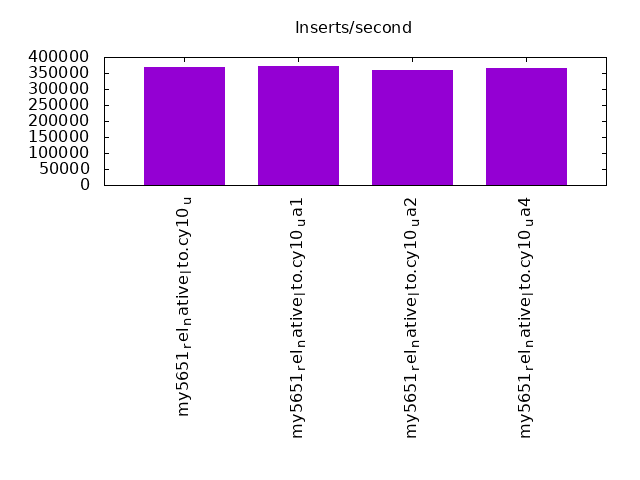

This is a report for the insert benchmark with 12000M docs and 24 client(s). It is generated by scripts (bash, awk, sed) and Tufte might not be impressed. An overview of the insert benchmark is here and a short update is here. Below, by DBMS, I mean DBMS+version.config. An example is my8020.c10b40 where my means MySQL, 8020 is version 8.0.20 and c10b40 is the name for the configuration file.
The test server has 80 cores with hyperthreads enabled, 256G RAM and fast storage. The benchmark was run with 24 client and there were 1 or 3 connections per client (1 for queries or inserts without rate limits, 1+1 for rate limited inserts+deletes). There are 24 tables, with a client per table. It loads 12B rows without secondary indexes, creates secondary indexes, then inserts 120M rows with a delete per insert to avoid growing the table. It then does 3 read+write tests for 3600s each that do queries as fast as possible with 100, 500 and then 1000 inserts/second/client concurrent with the queries and 1000 deletes/second to avoid growing the table. The database is larger than memory.
The tested DBMS are:
The numbers are inserts/s for l.i0 and l.i1, indexed docs (or rows) /s for l.x and queries/s for q*.2. The values are the average rate over the entire test for inserts (IPS) and queries (QPS). The range of values for IPS and QPS is split into 3 parts: bottom 25%, middle 50%, top 25%. Values in the bottom 25% have a red background, values in the top 25% have a green background and values in the middle have no color. A gray background is used for values that can be ignored because the DBMS did not sustain the target insert rate. Red backgrounds are not used when the minimum value is within 80% of the max value.
| dbms | l.i0 | l.x | l.i1 | q100.1 | q500.1 | q1000.1 |
|---|---|---|---|---|---|---|
| my5651_rel_native_lto.cy10_u | 368562 | 311999 | 20154 | 4660 | 4236 | 4143 |
| my5651_rel_native_lto.cy10_ua1 | 373169 | 312429 | 19750 | 4698 | 4312 | 4265 |
| my5651_rel_native_lto.cy10_ua2 | 360133 | 307269 | 20084 | 4537 | 4092 | 4009 |
| my5651_rel_native_lto.cy10_ua4 | 364133 | 317648 | 13302 | 4233 | 4258 | 4190 |
This table has relative throughput, throughput for the DBMS relative to the DBMS in the first line, using the absolute throughput from the previous table. Values less than 0.95 have a yellow background. Values greater than 1.05 have a blue background.
| dbms | l.i0 | l.x | l.i1 | q100.1 | q500.1 | q1000.1 |
|---|---|---|---|---|---|---|
| my5651_rel_native_lto.cy10_u | 1.00 | 1.00 | 1.00 | 1.00 | 1.00 | 1.00 |
| my5651_rel_native_lto.cy10_ua1 | 1.01 | 1.00 | 0.98 | 1.01 | 1.02 | 1.03 |
| my5651_rel_native_lto.cy10_ua2 | 0.98 | 0.98 | 1.00 | 0.97 | 0.97 | 0.97 |
| my5651_rel_native_lto.cy10_ua4 | 0.99 | 1.02 | 0.66 | 0.91 | 1.01 | 1.01 |
This lists the average rate of inserts/s for the tests that do inserts concurrent with queries. For such tests the query rate is listed in the table above. The read+write tests are setup so that the insert rate should match the target rate every second. Cells that are not at least 95% of the target have a red background to indicate a failure to satisfy the target.
| dbms | q100.1 | q500.1 | q1000.1 |
|---|---|---|---|
| my5651_rel_native_lto.cy10_u | 2380 | 8241 | 7842 |
| my5651_rel_native_lto.cy10_ua1 | 2380 | 8560 | 8461 |
| my5651_rel_native_lto.cy10_ua2 | 2380 | 7828 | 7406 |
| my5651_rel_native_lto.cy10_ua4 | 2376 | 6320 | 5732 |
| target | 2400 | 12000 | 24000 |
l.i0: load without secondary indexes. Graphs for performance per 1-second interval are here.
Average throughput:
Insert response time histogram: each cell has the percentage of responses that take <= the time in the header and max is the max response time in seconds. For the max column values in the top 25% of the range have a red background and in the bottom 25% of the range have a green background. The red background is not used when the min value is within 80% of the max value.
| dbms | 256us | 1ms | 4ms | 16ms | 64ms | 256ms | 1s | 4s | 16s | gt | max |
|---|---|---|---|---|---|---|---|---|---|---|---|
| my5651_rel_native_lto.cy10_u | 0.013 | 0.959 | 98.792 | 0.207 | 0.030 | nonzero | 0.278 | ||||
| my5651_rel_native_lto.cy10_ua1 | 0.013 | 1.547 | 98.190 | 0.215 | 0.034 | nonzero | 0.324 | ||||
| my5651_rel_native_lto.cy10_ua2 | 0.021 | 0.554 | 99.186 | 0.209 | 0.031 | nonzero | 0.258 | ||||
| my5651_rel_native_lto.cy10_ua4 | 0.013 | 0.706 | 99.059 | 0.191 | 0.030 | nonzero | 0.411 |
Performance metrics for the DBMS listed above. Some are normalized by throughput, others are not. Legend for results is here.
ips qps rps rmbps wps wmbps rpq rkbpq wpi wkbpi csps cpups cspq cpupq dbgb1 dbgb2 rss maxop p50 p99 tag 368562 0 2461 9.6 2459.7 104.5 0.007 0.027 0.007 0.290 91009 36.7 0.247 80 789.3 917.8 215.3 0.278 15085 13387 12000m.my5651_rel_native_lto.cy10_u 373169 0 2342 9.2 1149.2 98.6 0.006 0.025 0.003 0.271 86728 36.9 0.232 79 789.3 917.8 215.3 0.324 15085 13387 12000m.my5651_rel_native_lto.cy10_ua1 360133 0 2473 9.7 2400.4 101.9 0.007 0.027 0.007 0.290 89832 36.5 0.249 81 789.3 917.8 215.3 0.258 14785 13087 12000m.my5651_rel_native_lto.cy10_ua2 364133 0 2424 9.5 1167.3 90.9 0.007 0.027 0.003 0.256 94709 36.8 0.260 81 789.3 917.8 214.7 0.411 14884 13187 12000m.my5651_rel_native_lto.cy10_ua4
l.x: create secondary indexes.
Average throughput:
Performance metrics for the DBMS listed above. Some are normalized by throughput, others are not. Legend for results is here.
ips qps rps rmbps wps wmbps rpq rkbpq wpi wkbpi csps cpups cspq cpupq dbgb1 dbgb2 rss maxop p50 p99 tag 311999 0 4488 263.5 18406.4 682.2 0.014 0.865 0.059 2.239 96216 31.1 0.308 80 1626.5 1755.0 215.5 0.002 NA NA 12000m.my5651_rel_native_lto.cy10_u 312429 0 3401 270.3 15651.0 654.8 0.011 0.886 0.050 2.146 90163 31.0 0.289 79 1626.5 1755.0 215.5 0.002 NA NA 12000m.my5651_rel_native_lto.cy10_ua1 307269 0 4412 263.7 18305.1 675.8 0.014 0.879 0.060 2.252 95319 31.0 0.310 81 1626.5 1755.0 215.5 0.003 NA NA 12000m.my5651_rel_native_lto.cy10_ua2 317648 0 3308 276.2 15524.2 616.4 0.010 0.890 0.049 1.987 123033 31.1 0.387 78 1626.5 1755.0 214.9 0.002 NA NA 12000m.my5651_rel_native_lto.cy10_ua4
l.i1: continue load after secondary indexes created. Graphs for performance per 1-second interval are here.
Average throughput:
Insert response time histogram: each cell has the percentage of responses that take <= the time in the header and max is the max response time in seconds. For the max column values in the top 25% of the range have a red background and in the bottom 25% of the range have a green background. The red background is not used when the min value is within 80% of the max value.
| dbms | 256us | 1ms | 4ms | 16ms | 64ms | 256ms | 1s | 4s | 16s | gt | max |
|---|---|---|---|---|---|---|---|---|---|---|---|
| my5651_rel_native_lto.cy10_u | 0.628 | 75.542 | 22.624 | 1.206 | 0.001 | 2.027 | |||||
| my5651_rel_native_lto.cy10_ua1 | nonzero | 0.600 | 74.737 | 23.348 | 1.314 | 0.001 | 1.887 | ||||
| my5651_rel_native_lto.cy10_ua2 | 0.418 | 75.771 | 22.616 | 1.194 | 0.001 | 1.994 | |||||
| my5651_rel_native_lto.cy10_ua4 | 0.001 | 0.525 | 63.493 | 27.605 | 8.376 | 0.001 | 1.819 |
Delete response time histogram: each cell has the percentage of responses that take <= the time in the header and max is the max response time in seconds. For the max column values in the top 25% of the range have a red background and in the bottom 25% of the range have a green background. The red background is not used when the min value is within 80% of the max value.
| dbms | 256us | 1ms | 4ms | 16ms | 64ms | 256ms | 1s | 4s | 16s | gt | max |
|---|---|---|---|---|---|---|---|---|---|---|---|
| my5651_rel_native_lto.cy10_u | 0.004 | 13.024 | 86.742 | 0.229 | 0.001 | nonzero | 1.489 | ||||
| my5651_rel_native_lto.cy10_ua1 | 0.004 | 15.477 | 84.340 | 0.178 | 0.001 | nonzero | 1.265 | ||||
| my5651_rel_native_lto.cy10_ua2 | 0.003 | 12.629 | 87.137 | 0.230 | 0.001 | nonzero | 1.442 | ||||
| my5651_rel_native_lto.cy10_ua4 | 0.280 | 19.483 | 79.212 | 1.023 | 0.001 | nonzero | 1.183 |
Performance metrics for the DBMS listed above. Some are normalized by throughput, others are not. Legend for results is here.
ips qps rps rmbps wps wmbps rpq rkbpq wpi wkbpi csps cpups cspq cpupq dbgb1 dbgb2 rss maxop p50 p99 tag 20154 0 33465 515.2 74876.8 1529.0 1.660 26.175 3.715 77.685 361156 36.0 17.919 1429 2419.6 2615.4 215.5 2.027 849 150 12000m.my5651_rel_native_lto.cy10_u 19750 0 33012 512.1 72032.3 1508.7 1.672 26.551 3.647 78.225 395899 36.6 20.046 1483 2419.2 2614.8 215.6 1.887 799 150 12000m.my5651_rel_native_lto.cy10_ua1 20084 0 33370 513.7 74636.8 1525.0 1.662 26.189 3.716 77.753 360024 36.3 17.926 1446 2419.5 2615.6 215.6 1.994 849 150 12000m.my5651_rel_native_lto.cy10_ua2 13302 0 24068 607.4 50254.1 983.5 1.809 46.760 3.778 75.712 644219 30.7 48.429 1846 2420.7 2616.5 214.9 1.819 300 100 12000m.my5651_rel_native_lto.cy10_ua4
q100.1: range queries with 100 insert/s per client. Graphs for performance per 1-second interval are here.
Average throughput:
Query response time histogram: each cell has the percentage of responses that take <= the time in the header and max is the max response time in seconds. For max values in the top 25% of the range have a red background and in the bottom 25% of the range have a green background. The red background is not used when the min value is within 80% of the max value.
| dbms | 256us | 1ms | 4ms | 16ms | 64ms | 256ms | 1s | 4s | 16s | gt | max |
|---|---|---|---|---|---|---|---|---|---|---|---|
| my5651_rel_native_lto.cy10_u | 28.981 | 9.157 | 29.691 | 25.124 | 6.440 | 0.604 | 0.003 | 0.476 | |||
| my5651_rel_native_lto.cy10_ua1 | 28.860 | 9.289 | 29.642 | 25.247 | 6.379 | 0.580 | 0.003 | 0.589 | |||
| my5651_rel_native_lto.cy10_ua2 | 29.074 | 9.043 | 29.632 | 24.894 | 6.681 | 0.672 | 0.004 | 0.519 | |||
| my5651_rel_native_lto.cy10_ua4 | 26.242 | 11.782 | 25.969 | 28.019 | 7.341 | 0.645 | 0.002 | 0.742 |
Insert response time histogram: each cell has the percentage of responses that take <= the time in the header and max is the max response time in seconds. For max values in the top 25% of the range have a red background and in the bottom 25% of the range have a green background. The red background is not used when the min value is within 80% of the max value.
| dbms | 256us | 1ms | 4ms | 16ms | 64ms | 256ms | 1s | 4s | 16s | gt | max |
|---|---|---|---|---|---|---|---|---|---|---|---|
| my5651_rel_native_lto.cy10_u | 4.842 | 38.807 | 37.060 | 19.291 | 0.763 | ||||||
| my5651_rel_native_lto.cy10_ua1 | 0.001 | 6.244 | 36.166 | 40.097 | 17.493 | 0.797 | |||||
| my5651_rel_native_lto.cy10_ua2 | 4.951 | 37.000 | 38.841 | 19.208 | 0.668 | ||||||
| my5651_rel_native_lto.cy10_ua4 | 1.277 | 35.323 | 53.803 | 9.597 | 0.803 |
Delete response time histogram: each cell has the percentage of responses that take <= the time in the header and max is the max response time in seconds. For max values in the top 25% of the range have a red background and in the bottom 25% of the range have a green background. The red background is not used when the min value is within 80% of the max value.
| dbms | 256us | 1ms | 4ms | 16ms | 64ms | 256ms | 1s | 4s | 16s | gt | max |
|---|---|---|---|---|---|---|---|---|---|---|---|
| my5651_rel_native_lto.cy10_u | 0.001 | 7.219 | 37.856 | 36.747 | 18.177 | 0.635 | |||||
| my5651_rel_native_lto.cy10_ua1 | 0.001 | 9.383 | 34.466 | 39.898 | 16.252 | 0.788 | |||||
| my5651_rel_native_lto.cy10_ua2 | 0.001 | 7.635 | 35.841 | 38.460 | 18.063 | 0.630 | |||||
| my5651_rel_native_lto.cy10_ua4 | 0.002 | 2.415 | 37.305 | 51.631 | 8.647 | 0.556 |
Performance metrics for the DBMS listed above. Some are normalized by throughput, others are not. Legend for results is here.
ips qps rps rmbps wps wmbps rpq rkbpq wpi wkbpi csps cpups cspq cpupq dbgb1 dbgb2 rss maxop p50 p99 tag 2380 4660 29995 467.7 24786.3 480.4 6.437 102.785 10.414 206.692 257481 31.7 55.255 5442 2419.6 2615.4 215.6 0.476 208 144 12000m.my5651_rel_native_lto.cy10_u 2380 4698 29777 471.1 24263.8 479.8 6.338 102.694 10.194 206.424 255028 31.5 54.286 5364 2419.2 2614.8 215.6 0.589 208 144 12000m.my5651_rel_native_lto.cy10_ua1 2380 4537 29239 455.9 24141.3 473.2 6.445 102.905 10.146 203.658 254919 31.6 56.190 5572 2419.5 2615.6 215.6 0.519 192 128 12000m.my5651_rel_native_lto.cy10_ua2 2376 4233 27584 1038.6 21080.3 435.1 6.516 251.235 8.871 187.506 357912 33.9 84.549 6406 2420.7 2616.5 214.9 0.742 192 128 12000m.my5651_rel_native_lto.cy10_ua4
q500.1: range queries with 500 insert/s per client. Graphs for performance per 1-second interval are here.
Average throughput:
Query response time histogram: each cell has the percentage of responses that take <= the time in the header and max is the max response time in seconds. For max values in the top 25% of the range have a red background and in the bottom 25% of the range have a green background. The red background is not used when the min value is within 80% of the max value.
| dbms | 256us | 1ms | 4ms | 16ms | 64ms | 256ms | 1s | 4s | 16s | gt | max |
|---|---|---|---|---|---|---|---|---|---|---|---|
| my5651_rel_native_lto.cy10_u | 18.191 | 18.267 | 27.889 | 25.447 | 10.080 | 0.126 | nonzero | 0.289 | |||
| my5651_rel_native_lto.cy10_ua1 | 17.656 | 18.854 | 27.983 | 25.620 | 9.771 | 0.118 | nonzero | 0.282 | |||
| my5651_rel_native_lto.cy10_ua2 | 18.099 | 18.226 | 27.753 | 25.062 | 10.704 | 0.156 | nonzero | 0.360 | |||
| my5651_rel_native_lto.cy10_ua4 | 16.595 | 19.961 | 25.738 | 27.705 | 9.918 | 0.083 | nonzero | 0.324 |
Insert response time histogram: each cell has the percentage of responses that take <= the time in the header and max is the max response time in seconds. For max values in the top 25% of the range have a red background and in the bottom 25% of the range have a green background. The red background is not used when the min value is within 80% of the max value.
| dbms | 256us | 1ms | 4ms | 16ms | 64ms | 256ms | 1s | 4s | 16s | gt | max |
|---|---|---|---|---|---|---|---|---|---|---|---|
| my5651_rel_native_lto.cy10_u | 0.002 | 0.184 | 32.079 | 50.520 | 17.214 | 0.753 | |||||
| my5651_rel_native_lto.cy10_ua1 | 0.001 | 0.208 | 34.058 | 50.209 | 15.523 | 0.717 | |||||
| my5651_rel_native_lto.cy10_ua2 | 0.001 | 0.128 | 30.988 | 48.354 | 20.530 | 0.679 | |||||
| my5651_rel_native_lto.cy10_ua4 | nonzero | 0.131 | 0.788 | 81.060 | 18.021 | 0.758 |
Delete response time histogram: each cell has the percentage of responses that take <= the time in the header and max is the max response time in seconds. For max values in the top 25% of the range have a red background and in the bottom 25% of the range have a green background. The red background is not used when the min value is within 80% of the max value.
| dbms | 256us | 1ms | 4ms | 16ms | 64ms | 256ms | 1s | 4s | 16s | gt | max |
|---|---|---|---|---|---|---|---|---|---|---|---|
| my5651_rel_native_lto.cy10_u | 0.006 | 0.214 | 33.492 | 50.733 | 15.555 | 0.652 | |||||
| my5651_rel_native_lto.cy10_ua1 | 0.001 | 0.256 | 35.551 | 50.364 | 13.828 | 0.731 | |||||
| my5651_rel_native_lto.cy10_ua2 | 0.002 | 0.162 | 32.436 | 48.584 | 18.815 | 0.650 | |||||
| my5651_rel_native_lto.cy10_ua4 | 0.001 | 0.183 | 0.817 | 82.578 | 16.421 | 0.761 |
Performance metrics for the DBMS listed above. Some are normalized by throughput, others are not. Legend for results is here.
ips qps rps rmbps wps wmbps rpq rkbpq wpi wkbpi csps cpups cspq cpupq dbgb1 dbgb2 rss maxop p50 p99 tag 8241 4236 25780 399.8 15114.7 361.9 6.086 96.628 1.834 44.966 298639 49.4 70.495 9329 2428.2 2626.6 215.6 0.289 176 128 12000m.my5651_rel_native_lto.cy10_u 8560 4312 25968 407.7 15393.5 371.1 6.023 96.835 1.798 44.390 298581 49.7 69.247 9221 2428.0 2626.3 215.6 0.282 176 128 12000m.my5651_rel_native_lto.cy10_ua1 7828 4092 24856 385.4 13885.7 348.2 6.074 96.433 1.774 45.558 293081 48.5 71.614 9481 2428.4 2627.2 215.6 0.360 176 128 12000m.my5651_rel_native_lto.cy10_ua2 6320 4258 25650 980.8 10715.6 307.0 6.024 235.871 1.695 49.746 348870 51.0 81.929 9582 2428.9 2627.7 214.9 0.324 176 144 12000m.my5651_rel_native_lto.cy10_ua4
q1000.1: range queries with 1000 insert/s per client. Graphs for performance per 1-second interval are here.
Average throughput:
Query response time histogram: each cell has the percentage of responses that take <= the time in the header and max is the max response time in seconds. For max values in the top 25% of the range have a red background and in the bottom 25% of the range have a green background. The red background is not used when the min value is within 80% of the max value.
| dbms | 256us | 1ms | 4ms | 16ms | 64ms | 256ms | 1s | 4s | 16s | gt | max |
|---|---|---|---|---|---|---|---|---|---|---|---|
| my5651_rel_native_lto.cy10_u | 18.204 | 18.972 | 27.816 | 24.665 | 10.115 | 0.223 | 0.005 | 0.912 | |||
| my5651_rel_native_lto.cy10_ua1 | 17.864 | 19.499 | 27.914 | 24.960 | 9.548 | 0.207 | 0.007 | nonzero | 1.716 | ||
| my5651_rel_native_lto.cy10_ua2 | 18.126 | 18.889 | 27.736 | 24.319 | 10.664 | 0.261 | 0.005 | 0.980 | |||
| my5651_rel_native_lto.cy10_ua4 | 15.826 | 21.049 | 25.214 | 27.457 | 10.384 | 0.069 | nonzero | 0.611 |
Insert response time histogram: each cell has the percentage of responses that take <= the time in the header and max is the max response time in seconds. For max values in the top 25% of the range have a red background and in the bottom 25% of the range have a green background. The red background is not used when the min value is within 80% of the max value.
| dbms | 256us | 1ms | 4ms | 16ms | 64ms | 256ms | 1s | 4s | 16s | gt | max |
|---|---|---|---|---|---|---|---|---|---|---|---|
| my5651_rel_native_lto.cy10_u | 0.002 | 0.115 | 33.398 | 46.209 | 20.274 | 0.002 | 1.726 | ||||
| my5651_rel_native_lto.cy10_ua1 | nonzero | 0.103 | 37.288 | 45.516 | 17.070 | 0.022 | 1.993 | ||||
| my5651_rel_native_lto.cy10_ua2 | nonzero | 0.092 | 32.186 | 44.200 | 23.519 | 0.003 | 1.234 | ||||
| my5651_rel_native_lto.cy10_ua4 | nonzero | 0.068 | 0.525 | 74.243 | 25.163 | 0.869 |
Delete response time histogram: each cell has the percentage of responses that take <= the time in the header and max is the max response time in seconds. For max values in the top 25% of the range have a red background and in the bottom 25% of the range have a green background. The red background is not used when the min value is within 80% of the max value.
| dbms | 256us | 1ms | 4ms | 16ms | 64ms | 256ms | 1s | 4s | 16s | gt | max |
|---|---|---|---|---|---|---|---|---|---|---|---|
| my5651_rel_native_lto.cy10_u | 0.002 | 0.124 | 33.836 | 45.965 | 20.072 | 0.001 | 1.343 | ||||
| my5651_rel_native_lto.cy10_ua1 | nonzero | 0.115 | 37.759 | 45.219 | 16.901 | 0.007 | 1.793 | ||||
| my5651_rel_native_lto.cy10_ua2 | 0.001 | 0.100 | 32.594 | 44.141 | 23.164 | 0.001 | 1.324 | ||||
| my5651_rel_native_lto.cy10_ua4 | nonzero | 0.078 | 0.547 | 73.677 | 25.697 | 0.829 |
Performance metrics for the DBMS listed above. Some are normalized by throughput, others are not. Legend for results is here.
ips qps rps rmbps wps wmbps rpq rkbpq wpi wkbpi csps cpups cspq cpupq dbgb1 dbgb2 rss maxop p50 p99 tag 7842 4143 25372 393.5 15645.3 368.8 6.124 97.267 1.995 48.151 316147 51.9 76.311 10022 2438.7 2644.4 215.6 0.912 176 112 12000m.my5651_rel_native_lto.cy10_u 8461 4265 25379 406.7 16489.2 386.7 5.950 97.646 1.949 46.803 317994 52.5 74.559 9848 2438.7 2644.5 215.6 1.716 176 112 12000m.my5651_rel_native_lto.cy10_ua1 7406 4009 24506 380.1 14274.8 352.9 6.113 97.084 1.927 48.796 309335 50.8 77.158 10137 2438.7 2643.6 215.6 0.980 160 112 12000m.my5651_rel_native_lto.cy10_ua2 5732 4190 25401 985.0 10436.6 304.4 6.062 240.714 1.821 54.390 356738 52.1 85.134 9947 2438.7 2644.0 214.9 0.611 176 128 12000m.my5651_rel_native_lto.cy10_ua4
l.i0: load without secondary indexes
Performance metrics for all DBMS, not just the ones listed above. Some are normalized by throughput, others are not. Legend for results is here.
ips qps rps rmbps wps wmbps rpq rkbpq wpi wkbpi csps cpups cspq cpupq dbgb1 dbgb2 rss maxop p50 p99 tag 368562 0 2461 9.6 2459.7 104.5 0.007 0.027 0.007 0.290 91009 36.7 0.247 80 789.3 917.8 215.3 0.278 15085 13387 12000m.my5651_rel_native_lto.cy10_u 373169 0 2342 9.2 1149.2 98.6 0.006 0.025 0.003 0.271 86728 36.9 0.232 79 789.3 917.8 215.3 0.324 15085 13387 12000m.my5651_rel_native_lto.cy10_ua1 360133 0 2473 9.7 2400.4 101.9 0.007 0.027 0.007 0.290 89832 36.5 0.249 81 789.3 917.8 215.3 0.258 14785 13087 12000m.my5651_rel_native_lto.cy10_ua2 364133 0 2424 9.5 1167.3 90.9 0.007 0.027 0.003 0.256 94709 36.8 0.260 81 789.3 917.8 214.7 0.411 14884 13187 12000m.my5651_rel_native_lto.cy10_ua4
l.x: create secondary indexes
Performance metrics for all DBMS, not just the ones listed above. Some are normalized by throughput, others are not. Legend for results is here.
ips qps rps rmbps wps wmbps rpq rkbpq wpi wkbpi csps cpups cspq cpupq dbgb1 dbgb2 rss maxop p50 p99 tag 311999 0 4488 263.5 18406.4 682.2 0.014 0.865 0.059 2.239 96216 31.1 0.308 80 1626.5 1755.0 215.5 0.002 NA NA 12000m.my5651_rel_native_lto.cy10_u 312429 0 3401 270.3 15651.0 654.8 0.011 0.886 0.050 2.146 90163 31.0 0.289 79 1626.5 1755.0 215.5 0.002 NA NA 12000m.my5651_rel_native_lto.cy10_ua1 307269 0 4412 263.7 18305.1 675.8 0.014 0.879 0.060 2.252 95319 31.0 0.310 81 1626.5 1755.0 215.5 0.003 NA NA 12000m.my5651_rel_native_lto.cy10_ua2 317648 0 3308 276.2 15524.2 616.4 0.010 0.890 0.049 1.987 123033 31.1 0.387 78 1626.5 1755.0 214.9 0.002 NA NA 12000m.my5651_rel_native_lto.cy10_ua4
l.i1: continue load after secondary indexes created
Performance metrics for all DBMS, not just the ones listed above. Some are normalized by throughput, others are not. Legend for results is here.
ips qps rps rmbps wps wmbps rpq rkbpq wpi wkbpi csps cpups cspq cpupq dbgb1 dbgb2 rss maxop p50 p99 tag 20154 0 33465 515.2 74876.8 1529.0 1.660 26.175 3.715 77.685 361156 36.0 17.919 1429 2419.6 2615.4 215.5 2.027 849 150 12000m.my5651_rel_native_lto.cy10_u 19750 0 33012 512.1 72032.3 1508.7 1.672 26.551 3.647 78.225 395899 36.6 20.046 1483 2419.2 2614.8 215.6 1.887 799 150 12000m.my5651_rel_native_lto.cy10_ua1 20084 0 33370 513.7 74636.8 1525.0 1.662 26.189 3.716 77.753 360024 36.3 17.926 1446 2419.5 2615.6 215.6 1.994 849 150 12000m.my5651_rel_native_lto.cy10_ua2 13302 0 24068 607.4 50254.1 983.5 1.809 46.760 3.778 75.712 644219 30.7 48.429 1846 2420.7 2616.5 214.9 1.819 300 100 12000m.my5651_rel_native_lto.cy10_ua4
q100.1: range queries with 100 insert/s per client
Performance metrics for all DBMS, not just the ones listed above. Some are normalized by throughput, others are not. Legend for results is here.
ips qps rps rmbps wps wmbps rpq rkbpq wpi wkbpi csps cpups cspq cpupq dbgb1 dbgb2 rss maxop p50 p99 tag 2380 4660 29995 467.7 24786.3 480.4 6.437 102.785 10.414 206.692 257481 31.7 55.255 5442 2419.6 2615.4 215.6 0.476 208 144 12000m.my5651_rel_native_lto.cy10_u 2380 4698 29777 471.1 24263.8 479.8 6.338 102.694 10.194 206.424 255028 31.5 54.286 5364 2419.2 2614.8 215.6 0.589 208 144 12000m.my5651_rel_native_lto.cy10_ua1 2380 4537 29239 455.9 24141.3 473.2 6.445 102.905 10.146 203.658 254919 31.6 56.190 5572 2419.5 2615.6 215.6 0.519 192 128 12000m.my5651_rel_native_lto.cy10_ua2 2376 4233 27584 1038.6 21080.3 435.1 6.516 251.235 8.871 187.506 357912 33.9 84.549 6406 2420.7 2616.5 214.9 0.742 192 128 12000m.my5651_rel_native_lto.cy10_ua4
q500.1: range queries with 500 insert/s per client
Performance metrics for all DBMS, not just the ones listed above. Some are normalized by throughput, others are not. Legend for results is here.
ips qps rps rmbps wps wmbps rpq rkbpq wpi wkbpi csps cpups cspq cpupq dbgb1 dbgb2 rss maxop p50 p99 tag 8241 4236 25780 399.8 15114.7 361.9 6.086 96.628 1.834 44.966 298639 49.4 70.495 9329 2428.2 2626.6 215.6 0.289 176 128 12000m.my5651_rel_native_lto.cy10_u 8560 4312 25968 407.7 15393.5 371.1 6.023 96.835 1.798 44.390 298581 49.7 69.247 9221 2428.0 2626.3 215.6 0.282 176 128 12000m.my5651_rel_native_lto.cy10_ua1 7828 4092 24856 385.4 13885.7 348.2 6.074 96.433 1.774 45.558 293081 48.5 71.614 9481 2428.4 2627.2 215.6 0.360 176 128 12000m.my5651_rel_native_lto.cy10_ua2 6320 4258 25650 980.8 10715.6 307.0 6.024 235.871 1.695 49.746 348870 51.0 81.929 9582 2428.9 2627.7 214.9 0.324 176 144 12000m.my5651_rel_native_lto.cy10_ua4
q1000.1: range queries with 1000 insert/s per client
Performance metrics for all DBMS, not just the ones listed above. Some are normalized by throughput, others are not. Legend for results is here.
ips qps rps rmbps wps wmbps rpq rkbpq wpi wkbpi csps cpups cspq cpupq dbgb1 dbgb2 rss maxop p50 p99 tag 7842 4143 25372 393.5 15645.3 368.8 6.124 97.267 1.995 48.151 316147 51.9 76.311 10022 2438.7 2644.4 215.6 0.912 176 112 12000m.my5651_rel_native_lto.cy10_u 8461 4265 25379 406.7 16489.2 386.7 5.950 97.646 1.949 46.803 317994 52.5 74.559 9848 2438.7 2644.5 215.6 1.716 176 112 12000m.my5651_rel_native_lto.cy10_ua1 7406 4009 24506 380.1 14274.8 352.9 6.113 97.084 1.927 48.796 309335 50.8 77.158 10137 2438.7 2643.6 215.6 0.980 160 112 12000m.my5651_rel_native_lto.cy10_ua2 5732 4190 25401 985.0 10436.6 304.4 6.062 240.714 1.821 54.390 356738 52.1 85.134 9947 2438.7 2644.0 214.9 0.611 176 128 12000m.my5651_rel_native_lto.cy10_ua4
Insert response time histogram
256us 1ms 4ms 16ms 64ms 256ms 1s 4s 16s gt max tag 0.000 0.013 0.959 98.792 0.207 0.030 nonzero 0.000 0.000 0.000 0.278 my5651_rel_native_lto.cy10_u 0.000 0.013 1.547 98.190 0.215 0.034 nonzero 0.000 0.000 0.000 0.324 my5651_rel_native_lto.cy10_ua1 0.000 0.021 0.554 99.186 0.209 0.031 nonzero 0.000 0.000 0.000 0.258 my5651_rel_native_lto.cy10_ua2 0.000 0.013 0.706 99.059 0.191 0.030 nonzero 0.000 0.000 0.000 0.411 my5651_rel_native_lto.cy10_ua4
TODO - determine whether there is data for create index response time
Insert response time histogram
256us 1ms 4ms 16ms 64ms 256ms 1s 4s 16s gt max tag 0.000 0.000 0.000 0.628 75.542 22.624 1.206 0.001 0.000 0.000 2.027 my5651_rel_native_lto.cy10_u 0.000 0.000 nonzero 0.600 74.737 23.348 1.314 0.001 0.000 0.000 1.887 my5651_rel_native_lto.cy10_ua1 0.000 0.000 0.000 0.418 75.771 22.616 1.194 0.001 0.000 0.000 1.994 my5651_rel_native_lto.cy10_ua2 0.000 0.000 0.001 0.525 63.493 27.605 8.376 0.001 0.000 0.000 1.819 my5651_rel_native_lto.cy10_ua4
Delete response time histogram
256us 1ms 4ms 16ms 64ms 256ms 1s 4s 16s gt max tag 0.000 0.000 0.004 13.024 86.742 0.229 0.001 nonzero 0.000 0.000 1.489 my5651_rel_native_lto.cy10_u 0.000 0.000 0.004 15.477 84.340 0.178 0.001 nonzero 0.000 0.000 1.265 my5651_rel_native_lto.cy10_ua1 0.000 0.000 0.003 12.629 87.137 0.230 0.001 nonzero 0.000 0.000 1.442 my5651_rel_native_lto.cy10_ua2 0.000 0.000 0.280 19.483 79.212 1.023 0.001 nonzero 0.000 0.000 1.183 my5651_rel_native_lto.cy10_ua4
Query response time histogram
256us 1ms 4ms 16ms 64ms 256ms 1s 4s 16s gt max tag 28.981 9.157 29.691 25.124 6.440 0.604 0.003 0.000 0.000 0.000 0.476 my5651_rel_native_lto.cy10_u 28.860 9.289 29.642 25.247 6.379 0.580 0.003 0.000 0.000 0.000 0.589 my5651_rel_native_lto.cy10_ua1 29.074 9.043 29.632 24.894 6.681 0.672 0.004 0.000 0.000 0.000 0.519 my5651_rel_native_lto.cy10_ua2 26.242 11.782 25.969 28.019 7.341 0.645 0.002 0.000 0.000 0.000 0.742 my5651_rel_native_lto.cy10_ua4
Insert response time histogram
256us 1ms 4ms 16ms 64ms 256ms 1s 4s 16s gt max tag 0.000 0.000 0.000 4.842 38.807 37.060 19.291 0.000 0.000 0.000 0.763 my5651_rel_native_lto.cy10_u 0.000 0.000 0.001 6.244 36.166 40.097 17.493 0.000 0.000 0.000 0.797 my5651_rel_native_lto.cy10_ua1 0.000 0.000 0.000 4.951 37.000 38.841 19.208 0.000 0.000 0.000 0.668 my5651_rel_native_lto.cy10_ua2 0.000 0.000 0.000 1.277 35.323 53.803 9.597 0.000 0.000 0.000 0.803 my5651_rel_native_lto.cy10_ua4
Delete response time histogram
256us 1ms 4ms 16ms 64ms 256ms 1s 4s 16s gt max tag 0.000 0.000 0.001 7.219 37.856 36.747 18.177 0.000 0.000 0.000 0.635 my5651_rel_native_lto.cy10_u 0.000 0.000 0.001 9.383 34.466 39.898 16.252 0.000 0.000 0.000 0.788 my5651_rel_native_lto.cy10_ua1 0.000 0.000 0.001 7.635 35.841 38.460 18.063 0.000 0.000 0.000 0.630 my5651_rel_native_lto.cy10_ua2 0.000 0.000 0.002 2.415 37.305 51.631 8.647 0.000 0.000 0.000 0.556 my5651_rel_native_lto.cy10_ua4
Query response time histogram
256us 1ms 4ms 16ms 64ms 256ms 1s 4s 16s gt max tag 18.191 18.267 27.889 25.447 10.080 0.126 nonzero 0.000 0.000 0.000 0.289 my5651_rel_native_lto.cy10_u 17.656 18.854 27.983 25.620 9.771 0.118 nonzero 0.000 0.000 0.000 0.282 my5651_rel_native_lto.cy10_ua1 18.099 18.226 27.753 25.062 10.704 0.156 nonzero 0.000 0.000 0.000 0.360 my5651_rel_native_lto.cy10_ua2 16.595 19.961 25.738 27.705 9.918 0.083 nonzero 0.000 0.000 0.000 0.324 my5651_rel_native_lto.cy10_ua4
Insert response time histogram
256us 1ms 4ms 16ms 64ms 256ms 1s 4s 16s gt max tag 0.000 0.000 0.002 0.184 32.079 50.520 17.214 0.000 0.000 0.000 0.753 my5651_rel_native_lto.cy10_u 0.000 0.000 0.001 0.208 34.058 50.209 15.523 0.000 0.000 0.000 0.717 my5651_rel_native_lto.cy10_ua1 0.000 0.000 0.001 0.128 30.988 48.354 20.530 0.000 0.000 0.000 0.679 my5651_rel_native_lto.cy10_ua2 0.000 0.000 nonzero 0.131 0.788 81.060 18.021 0.000 0.000 0.000 0.758 my5651_rel_native_lto.cy10_ua4
Delete response time histogram
256us 1ms 4ms 16ms 64ms 256ms 1s 4s 16s gt max tag 0.000 0.000 0.006 0.214 33.492 50.733 15.555 0.000 0.000 0.000 0.652 my5651_rel_native_lto.cy10_u 0.000 0.000 0.001 0.256 35.551 50.364 13.828 0.000 0.000 0.000 0.731 my5651_rel_native_lto.cy10_ua1 0.000 0.000 0.002 0.162 32.436 48.584 18.815 0.000 0.000 0.000 0.650 my5651_rel_native_lto.cy10_ua2 0.000 0.000 0.001 0.183 0.817 82.578 16.421 0.000 0.000 0.000 0.761 my5651_rel_native_lto.cy10_ua4
Query response time histogram
256us 1ms 4ms 16ms 64ms 256ms 1s 4s 16s gt max tag 18.204 18.972 27.816 24.665 10.115 0.223 0.005 0.000 0.000 0.000 0.912 my5651_rel_native_lto.cy10_u 17.864 19.499 27.914 24.960 9.548 0.207 0.007 nonzero 0.000 0.000 1.716 my5651_rel_native_lto.cy10_ua1 18.126 18.889 27.736 24.319 10.664 0.261 0.005 0.000 0.000 0.000 0.980 my5651_rel_native_lto.cy10_ua2 15.826 21.049 25.214 27.457 10.384 0.069 nonzero 0.000 0.000 0.000 0.611 my5651_rel_native_lto.cy10_ua4
Insert response time histogram
256us 1ms 4ms 16ms 64ms 256ms 1s 4s 16s gt max tag 0.000 0.000 0.002 0.115 33.398 46.209 20.274 0.002 0.000 0.000 1.726 my5651_rel_native_lto.cy10_u 0.000 0.000 nonzero 0.103 37.288 45.516 17.070 0.022 0.000 0.000 1.993 my5651_rel_native_lto.cy10_ua1 0.000 0.000 nonzero 0.092 32.186 44.200 23.519 0.003 0.000 0.000 1.234 my5651_rel_native_lto.cy10_ua2 0.000 0.000 nonzero 0.068 0.525 74.243 25.163 0.000 0.000 0.000 0.869 my5651_rel_native_lto.cy10_ua4
Delete response time histogram
256us 1ms 4ms 16ms 64ms 256ms 1s 4s 16s gt max tag 0.000 0.000 0.002 0.124 33.836 45.965 20.072 0.001 0.000 0.000 1.343 my5651_rel_native_lto.cy10_u 0.000 0.000 nonzero 0.115 37.759 45.219 16.901 0.007 0.000 0.000 1.793 my5651_rel_native_lto.cy10_ua1 0.000 0.000 0.001 0.100 32.594 44.141 23.164 0.001 0.000 0.000 1.324 my5651_rel_native_lto.cy10_ua2 0.000 0.000 nonzero 0.078 0.547 73.677 25.697 0.000 0.000 0.000 0.829 my5651_rel_native_lto.cy10_ua4